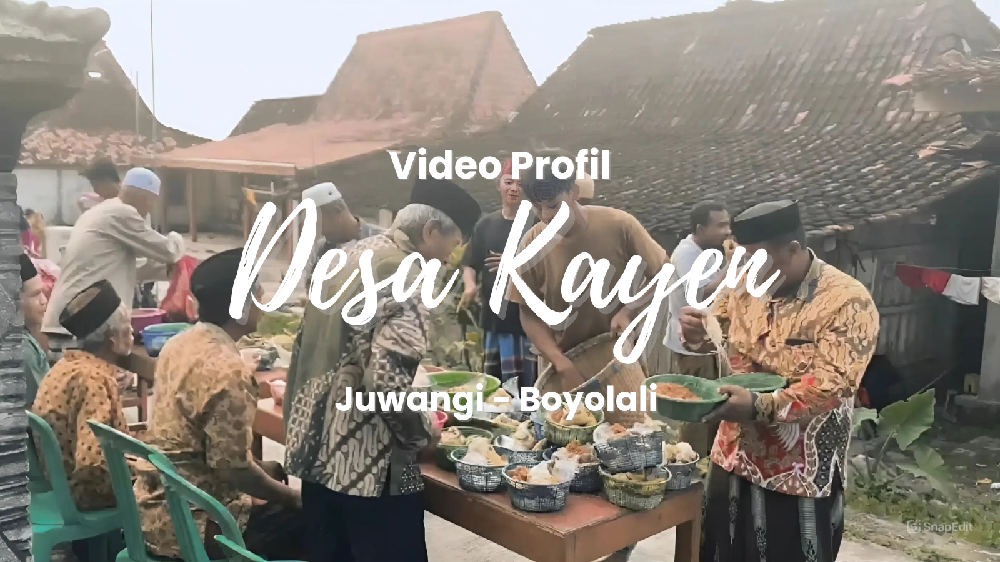
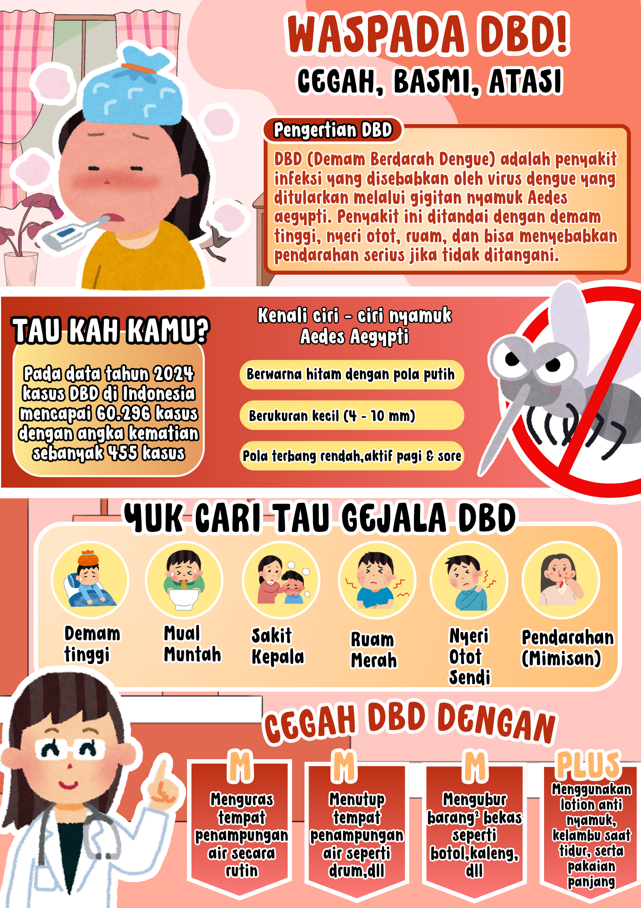
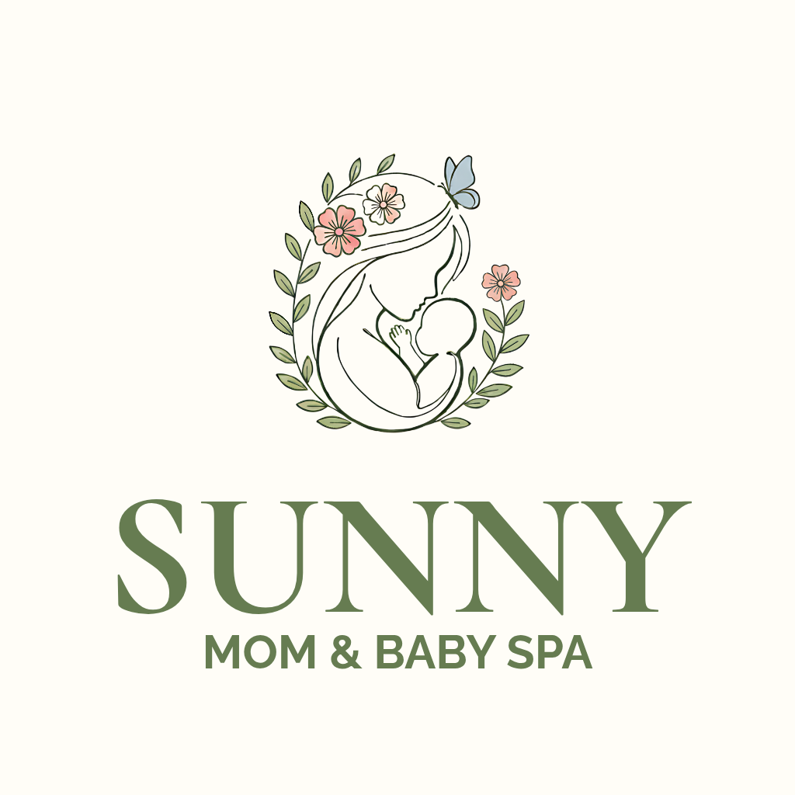
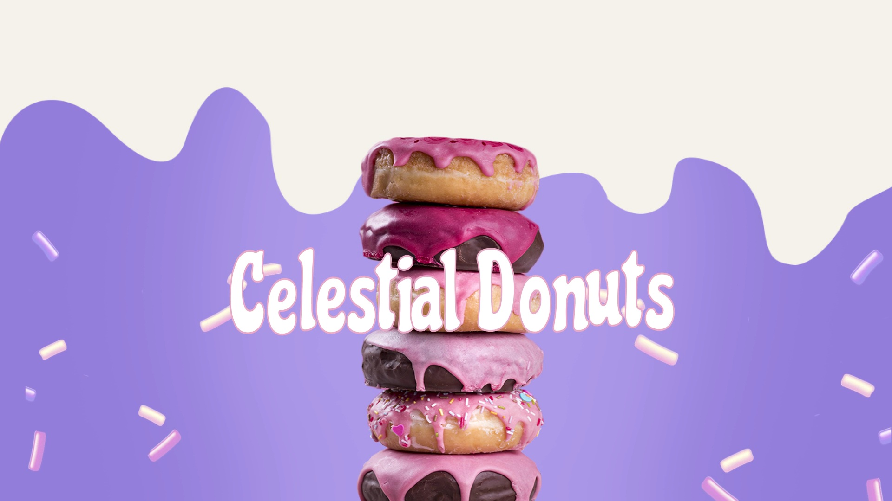
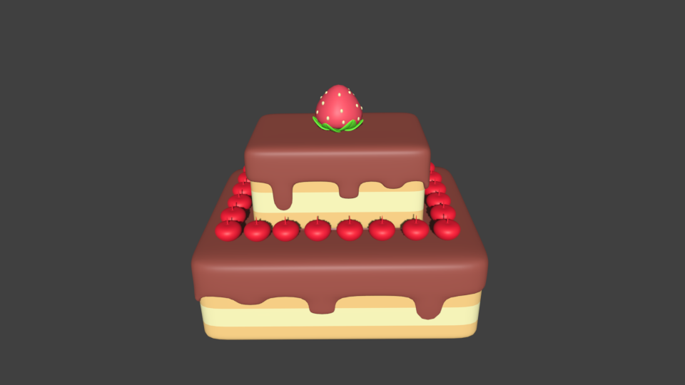
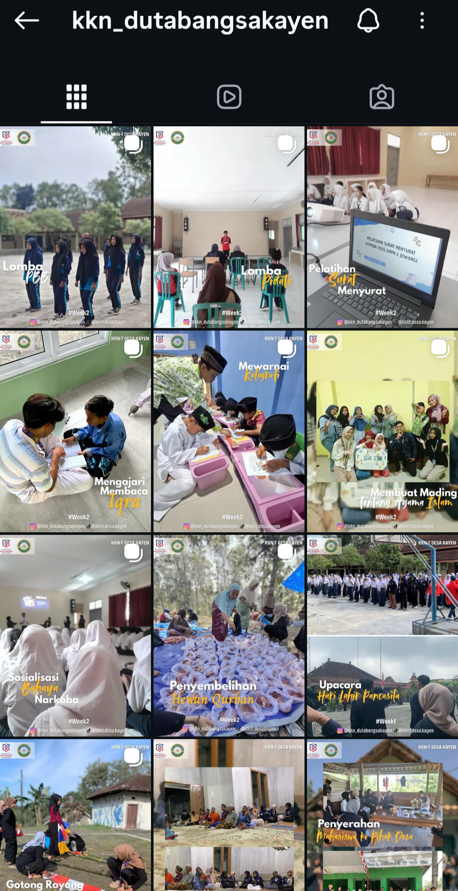
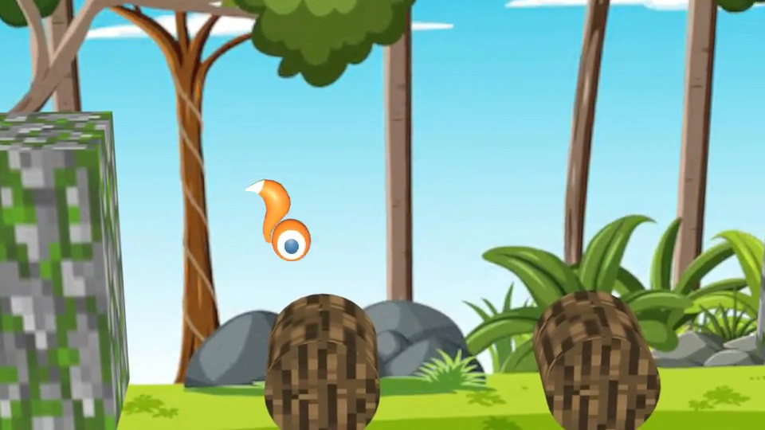
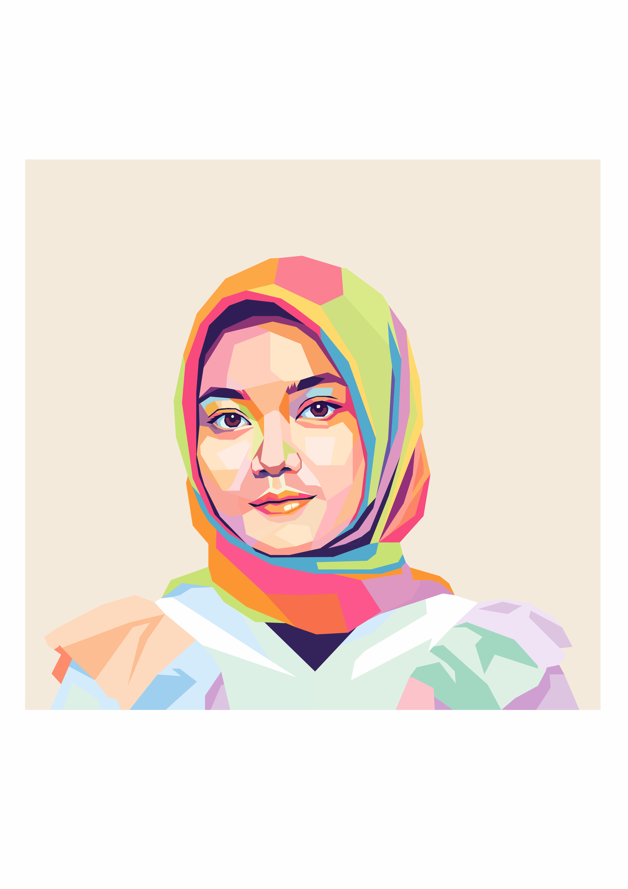

Design description goes here...
Portofolio Showcase
Eksplorasi perjalanan saya melalui proyek, sertifikasi, dan keahlian teknis.
C++
Python
Golang
PHP
JavaScript
Dart
HTML5
CSS3
Photoshop
Illustrator
After
Effects
Blender
Canva
CapCut
Flutter
Node.js
CodeIgniter
MySQL
Supabase
Firebase
GitHub
VS Code

Video Profil

Desain Infografis

Logo

Iklan Produk

Desain Objek 3D

Feed Instagram

Poster

Video Animasi
